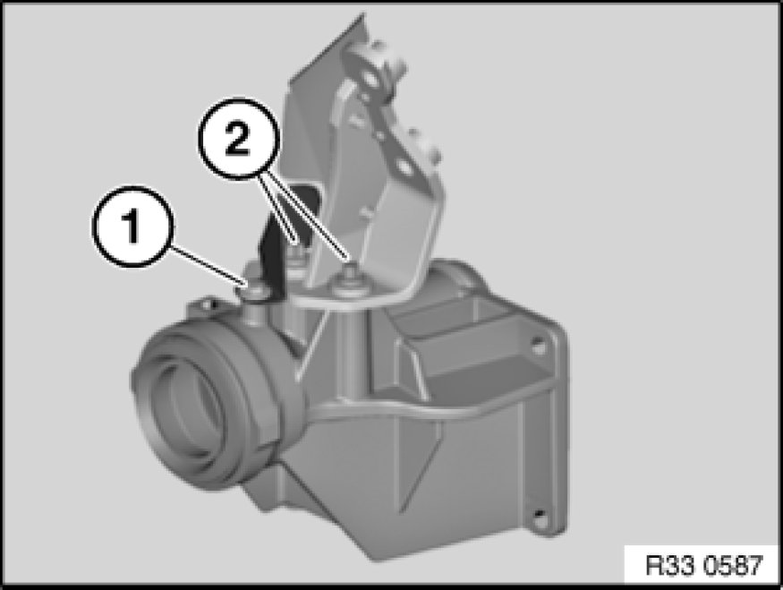
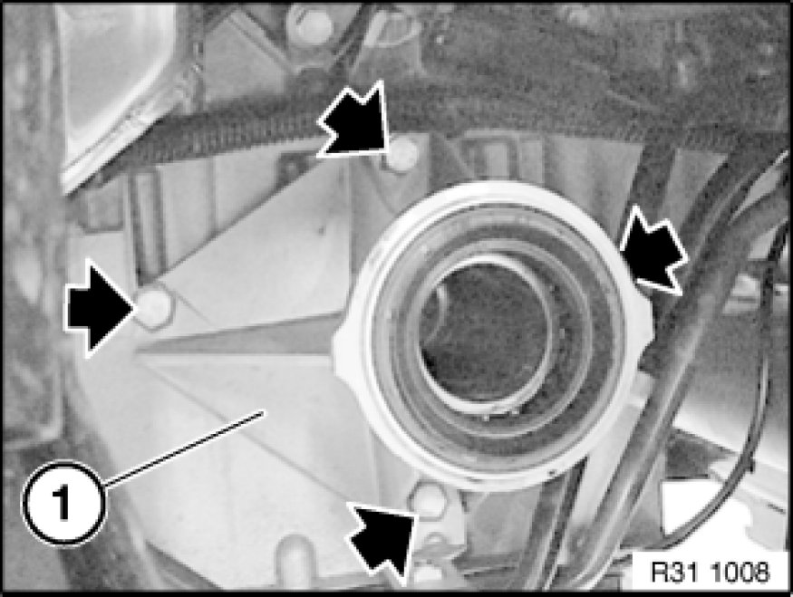

Removing and Installing/Replacing Right Output Shaft Bearing Block
31 53 040 - Removing and installing/replacing right output shaft bearing block

Necessary preliminary tasks:
- Remove right output shaft Removing and Installing/Replacing Left or Right Output Shaft

N46:
Release screw (1) and remove heat shield from bearing block.
Tightening torque 31 60 3AZ 31 60 Output Shaft (Front).
Release screws (2) and remove bearing block support with heat shield.
Tightening torque 31 60 2AZ 31 60 Output Shaft (Front).

Release grounding strap on bearing block.
Release screws and remove bearing block (1) from oil sump.
Installation:
Replace O-ring Replacing O-ring for Bearing Block / remove protective caps.
Tightening torque 31 60 1AZ 31 60 Output Shaft (Front).